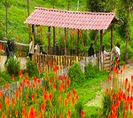
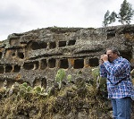
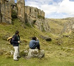
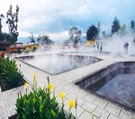

Una Diversidad:

- Granja Porcón
- La Granja Porcón reúne en un solo lugar el agroturismo, la naturaleza y el intercambio cultural.

- Cumbe Mayo
- Una vista panorámica del valle de Cajamarca, templo pre-inca de Layzón, bosque de Piedras con sus formas misteriosas y caprichosas de frailones.

- Ventanillas de Otuzco
- Donde podrá disfrutar de hermosos paisajes y respirar aire fresco y puro. Visitaremos las ventanillas de Otuzco ó Necrópolis de Otuzco

- Baños del Inca
- Las aguas volcánicas superan los 70 grados y poseen componentes minerales a los que se les atribuye propiedades medicinales.